month.abb## [1] "Jan" "Feb" "Mar" "Apr" "May" "Jun" "Jul" "Aug" "Sep" "Oct" "Nov" "Dec"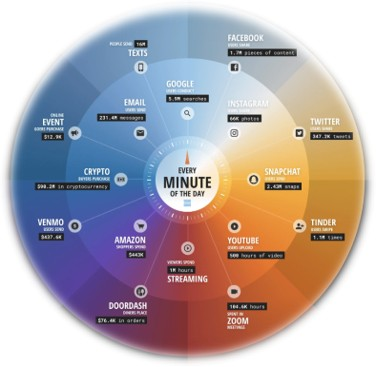
데이터란 질적 혹은 양적인 변수들의 가치 집합으로서 정보의 조합
온라인 어원 사전(Online Etymology Dictionary)에 따르면 데이터(data)는 “datum”의 복수형으로서 주다(give)라는 뜻의 라틴어 동사 “dare”에서 비롯
“datum”은 주어진 것들(things given)의 의미를 지니고 있으므로, 찾아가는 방법을 탐구하는 것이 데이터 과학자의 임무
빅데이터의 환경이 조성되면서 데이터 분석을 담당하는 사람들에게 주어진 업무의 범주가 훨씬 확대되어 더욱 과학적이고 합리적인 방법과 분별능력이 필요함
통계학적 사고와 이해가 필수적으로 뒷받침되어야 함
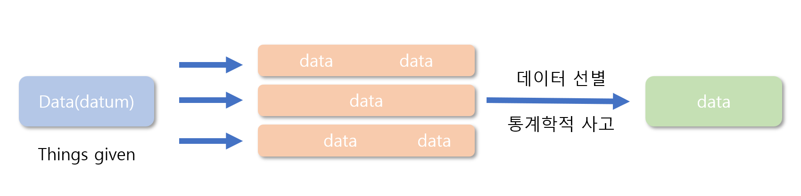
데이터는 근본적으로 의사결정에 적합한 정보를 추출하기 위해서 사용되는 것
기업의 경영활동에서 의사결정 단계는 매우 중요하고 이를 위해 상당히 많은 기업의 자원이 소비됨
올바른 데이터의 수집은 의사결정의 성공과 실패를 좌우할 정도로 중요한 요인으로 간주됨
데이터는 상대적으로 원천적인 의미
정보는 데이터와 비교했을 때 상당히 폭넓은 의미를 지니고 있음
일반적으로 정보라고 하면, 관찰이나 측정을 통해 수집한 자료를 문제해결을 위해 체계적으로 정리한 것을 의미함
이러한 정보의 개념은 각 분야에서 의사소통, 데이터의 축적, 지식의 전달, 의미파악, 패턴 인식, 자료의 해석 등으로 사용되고 있음
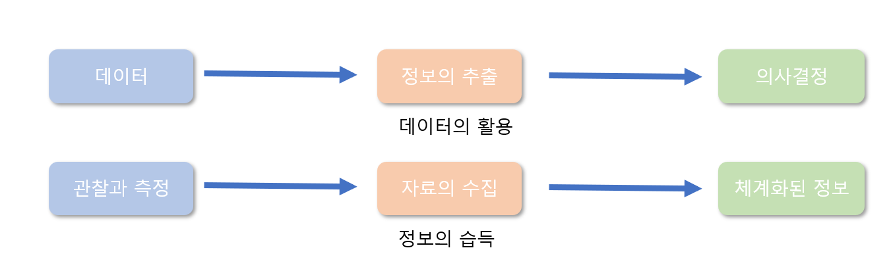
지식은 데이터의 의미와 비교할 때, 표면적이고 추상적임
특정한 주제에 관해 정보를 다루면서 발생하는 여러 가지 이벤트를 접하게 되는데, 이 과정에서 수많은 축적된 경험으로부터 획득되는 것이 바로 지식임
예를 들어, 서울에서 부산까지의 최단 거리를 측정했다고 하면 이는 “데이터”를 의미하지만, 서울에서 부산까지 도달하는 가장 좋은 방법이라고 한다면, 이는 지식의 범주에 해당함
올바른 정보나 지식을 축적하기 위해서는 신뢰도 높은 데이터가 바탕이 되어야 함
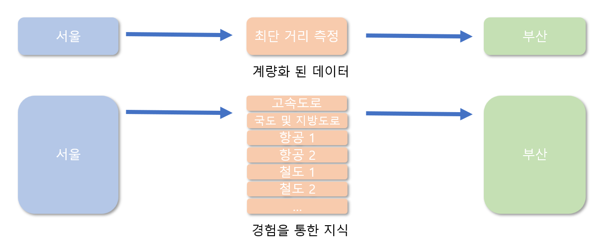
데이터를 구조적인 측면에서 범위를 좁혀 생각해보면 컴퓨터 과학(computer science)이나 통계학(statistics) 등에서 이야기하는 행과 열로 구성된 형태적인 구조를 의미함
빅데이터 시대의 도래로 조금 더 확장된 형태의 데이터 형태로 발전함
복잡한 나무구조 형태
음향, 영상신호, 이미지 구조 등
데이터의 측정 가능성이라는 의미가 과거와 비교하여 상당히 확장됨
데이터 과학자는 이러한 환경 변화에 따른 데이터의 형태와 구조를 얼마나 이해하고 효과적으로 집약할 수 있는가 하는 과제를 부여받음
R 등 각종 통계 패키지에서 활용되는 데이터 형태로 벡터, 행렬, 배열, 리스트 및 데이터 프레임 등이 있음
각 패키지에서의 효과적인 작업 수행을 위해서는 이들 데이터 구조의 특징을 이해하고 서로 간의 상이한 특성 등을 구별할 필요가 있음
여기서는 R 프로그램에서 사용되는 데이터의 형태를 살펴 본다.
벡터는 1개 이상의 원소로 구성된 자료구조로서 가장 기본이 되는 자료 객체를 의미함
하나의 벡터의 원소는 한 가지 형태(mode)만 가능하다는 점에 유의해야 함
문자형
month.abb## [1] "Jan" "Feb" "Mar" "Apr" "May" "Jun" "Jul" "Aug" "Sep" "Oct" "Nov" "Dec"sample(10)## [1] 1 3 5 7 6 4 2 9 8 10sample(c(T,F), 10, replace=T)## [1] FALSE FALSE TRUE TRUE FALSE TRUE FALSE TRUE FALSE TRUE행렬은 동일한 형태로 구성된 2차원의 데이터 구조로 행의 차원과 열의 차원을 갖고 있음
숫자형 행렬
matrix(sample(12),nrow=3)## [,1] [,2] [,3] [,4]
## [1,] 5 3 2 10
## [2,] 7 4 11 1
## [3,] 12 6 9 8matrix(month.abb, nrow=4)## [,1] [,2] [,3]
## [1,] "Jan" "May" "Sep"
## [2,] "Feb" "Jun" "Oct"
## [3,] "Mar" "Jul" "Nov"
## [4,] "Apr" "Aug" "Dec"matrix(sample(c(T,F), 9, replace=T), nrow=3)## [,1] [,2] [,3]
## [1,] FALSE TRUE FALSE
## [2,] FALSE FALSE TRUE
## [3,] FALSE TRUE FALSE배열(array)은 행렬을 2차원 이상으로 확장시킨 객체를 의미
2차원 구조로 이루어진 행렬도 배열의 한 형태이나, 일반적으로는 3차원 이상의 데이터 객체를 배열이라고 함
행렬의 경우와 마찬가지로 행과 열을 지정하는 방법은 유사하지만, 행렬의 개수를 지정하는 하나의 차원이 더 존재한다는 점이 상이함
Titanic 예제
Titanic## , , Age = Child, Survived = No
##
## Sex
## Class Male Female
## 1st 0 0
## 2nd 0 0
## 3rd 35 17
## Crew 0 0
##
## , , Age = Adult, Survived = No
##
## Sex
## Class Male Female
## 1st 118 4
## 2nd 154 13
## 3rd 387 89
## Crew 670 3
##
## , , Age = Child, Survived = Yes
##
## Sex
## Class Male Female
## 1st 5 1
## 2nd 11 13
## 3rd 13 14
## Crew 0 0
##
## , , Age = Adult, Survived = Yes
##
## Sex
## Class Male Female
## 1st 57 140
## 2nd 14 80
## 3rd 75 76
## Crew 192 20서로 다른 형태(mode)의 데이터로 구성된 객체를 의미함
행렬과 배열 등이 동일한 형태의 원소로 이루어진 객체인 반면 리스트를 구성하는 성분(component)은 서로 다른 형태의 원소를 가질 수 있고, 길이도 다를 수 있음
문자형, 수치형, 논리형 자료가 혼합되어 한 리스트 내에 존재할 수 있음
행렬과 달리 리스트에서는 서로 다른 길이의 성분이 존재할 수 있으며 리스트에서 성분이라고 정의되는 것은 행렬과 배열의 차원과 유사
list(vector=sample(10), matrix=matrix(month.abb,nrow=3))## $vector
## [1] 4 7 5 8 2 6 9 1 10 3
##
## $matrix
## [,1] [,2] [,3] [,4]
## [1,] "Jan" "Apr" "Jul" "Oct"
## [2,] "Feb" "May" "Aug" "Nov"
## [3,] "Mar" "Jun" "Sep" "Dec"head(iris,10)## Sepal.Length Sepal.Width Petal.Length Petal.Width Species
## 1 5.1 3.5 1.4 0.2 setosa
## 2 4.9 3.0 1.4 0.2 setosa
## 3 4.7 3.2 1.3 0.2 setosa
## 4 4.6 3.1 1.5 0.2 setosa
## 5 5.0 3.6 1.4 0.2 setosa
## 6 5.4 3.9 1.7 0.4 setosa
## 7 4.6 3.4 1.4 0.3 setosa
## 8 5.0 3.4 1.5 0.2 setosa
## 9 4.4 2.9 1.4 0.2 setosa
## 10 4.9 3.1 1.5 0.1 setosa데이터는 생성목적에 따라 내부 데이터와 외부 데이터로 구분 됨
내부 데이터는 데이터를 수집하는 기업 등의 목적에 따라 데이터베이스에 축적되어 이용됨
외부 데이터는 일반인에게 공개되어 있는 데이터를 말함
통계청의 KOSIS (https://kosis.kr/index/index.do), 한국은행의 ECOS (https://ecos.bok.or.kr/) 등
통계 데이터베이스 형태로 제공되거나 공개 API (application programming interface) 형태로 제공됨
외부 데이터에는 정부, 기업, 개인 등의 홈페이지에 수록된 자료도 해당함
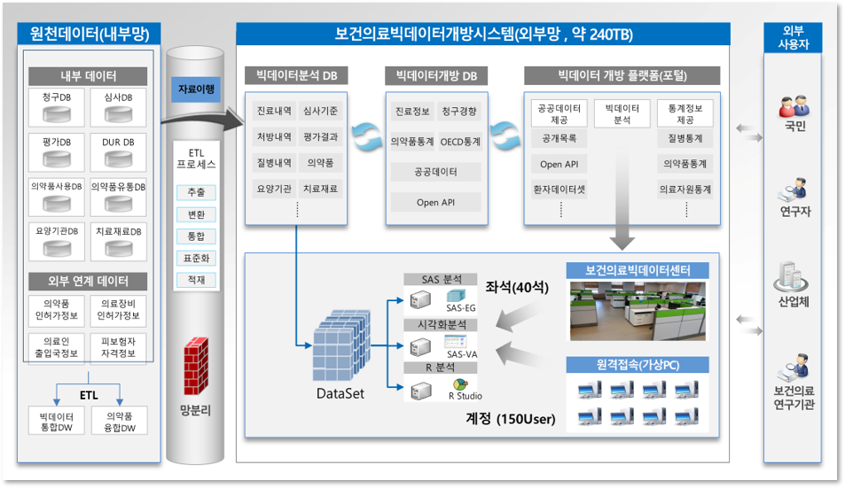
일반적으로 데이터는 데이터 분석을 담당하는 데이터 과학자의 의중에 따라 특별한 목적을 가지고 수집됨
특히 기업경영과 관련된 문제, 비즈니스 문제인 경우에는 의사결정에 이르는데 도움이 될 만한 데이터 분석과정이 필수적임
분석의 궁극적인 목적이 무엇인지 명확히 정의한 후 데이터를 수집함
데이터의 분석기회, 분석 대상을 찾는 과정은 기업경영에서 매우 중요한 위치를 차지하므로 데이터 과학자의 역할과 임무가 더욱 부각됨
또한, 데이터의 양적 팽창이 이루어진 빅데이터 시대에서는 적절한 데이터를 수집하고 선택하여 분석하는 업루를 담당하는 사람이 바로 데이터 과학자이므로 이에 대한 수요도 급증함
빅데이터 환경에서 데이터 수집을 효과적으로 할 수 있는 방법으로는 다음과 같은 것이 있음
검색 데이터를 수집하여 이용하는 방법
소셜네트워크서비스(social network service, SNS) 데이터를 수집하여 이용하는 방법
웹문서 데이터를 수집하여 이용하는 방법
공공데이터를 수집하여 이용하는 방법
검색데이터란 검색 포털에서 개인이 검색을 위해 입력한 자료를 축적한 데이터를 말함
국내외의 주요 포털 회사별로 개인들의 검색결과를 저장한 방대한 자료를 보유하고
수많은 소비자 또는 고객의 관심과 성향 등이 반영되었기 때문에 상당히 가치 있는 빅데이터의 일종이라고 할 수 있음
최근 각 포털 사이트에서는 시간의 흐름에 따른 검색어 조회 수의 추이를 찾아볼 수 있는 서비스를 제공하고 있음
구글 트렌드
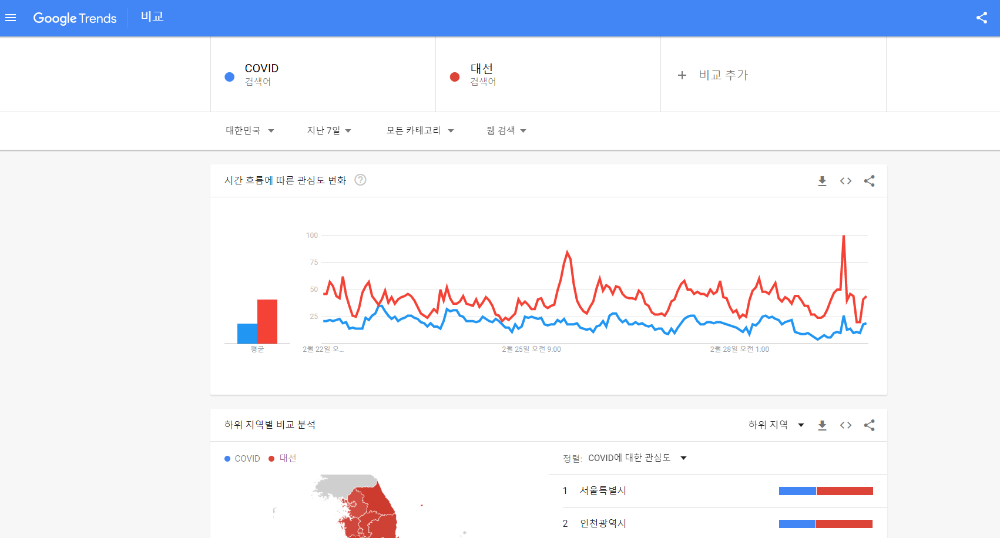
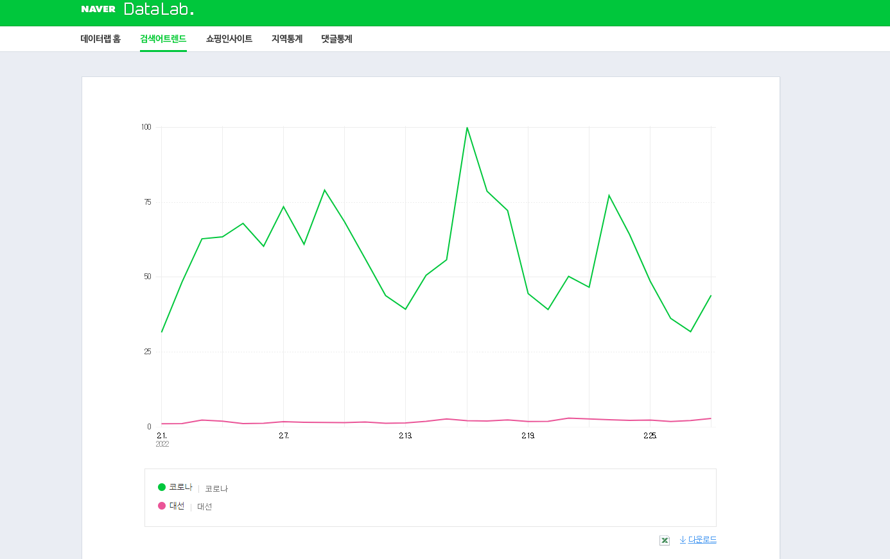
소셜데이터란 트위터(Tweeter)나 페이스북(Facebook) 등 대표적인 소셜네트워크 서비스에 올린 메시지, 사진, 동영상 등 자료의 집합을 의미함
트위터는 짦은 문장을 통해 자신의 생각을 다른 사람들과 공유할 수 있는 서비스
페이스북은 트위터에 비해 다소 폐쇄성이 강하여 자신이 올린 글이나 사진, 동영상 등 각종 자료를 자신이 지정한 그룹에 한정하여 공개하는 것이 특징임
소셜네트워크서비스 데이터는 API라는 방식을 사용하여 수집함
API란 Application Programming Interface의 머릿글자로 이루어진 약자로서 응용프로그램 프로그래밍 인터페이스를 의미함
넓은 의미에서 응용프로그램에서 사용 가능하도록 운영체제(Operating System, OS)나 프로그래밍 언어가 제공하는 기능을 제어할 수 있도록 만들어 놓은 인터페이스를 의미함
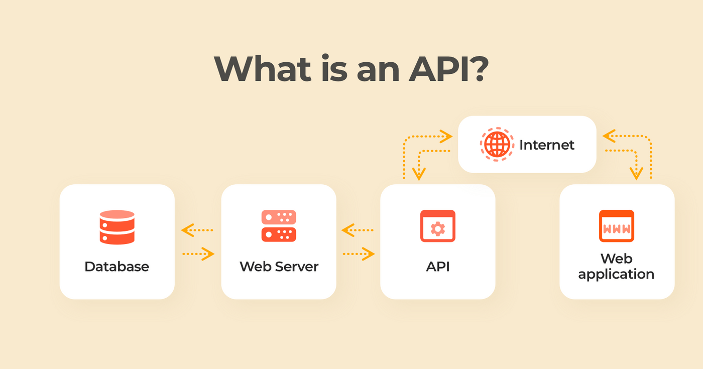
소셜네트워크서비스의 데이터는 앞서 살펴본 검색 데이터와 유사한 측면이 있으나 더욱 적극적이고 직접적인 개인의 의사가 포함됨
웹문서란 웹상에서 사용되는 문서로서 통합검색 결과 웹문서의 영역 안에 노출되는 문서를 의미함
최대한 웹문서의 구조를 잘 지키는 동시에 최적화를 통해 적절한 검색이 이루어지도록 작성되고 있음
최적화는 크롤링(cwawling)과 인덱싱(indexing) 두 가지 측면을 고려해 볼 수 있음
크롤링 최적화: 검색로봇이 해당 웹문서의 내용을 최대한 많이 긁어 갈 수 있도록 하는 것
인덱싱 최적화: 검색로봇에 의해 수집된 문서가 원하는 검색어에 대해 최대한 상위에 노출되도록 하는 것
웹문서는 검색 및 노출을 목적으로 작성되므로 웹문서 데이터의 수집방법도 상당히 정형화 되어 있음
웹문서에서 데이터를 추출하는 기술을 웹스크래핑(web scraping)이라고 함
웹스크래핑은 웹 브라우저 화면에 표시되는 다양한 정보 중 사용자가 지정하거나 필요한 정보만 추출하여 가공, 저장하여 사용자에게 제공하는 기술
웹스크래핑(web scraping): 웹문서를 가공하여 정보를 추출하는 과정으로서 웹크롤링을 하지 않고도 웹스크래핑을 할 수 있음
웹크롤링(web crawling): 기초가 되는 URL(Uniform Resource Locator) seed들을 저장한 뒤 웹페이지의 하이퍼링크를 인식하여 URL을 갱신함
웹스크래핑이나 웹크롤링의 도구를 웹크롤러(web crawler)라고 함
웹크롤러는 조직적이고 자동화된 방법으로 월드 와이드 웹을 탐색하는 컴퓨터 프로그램
앤트(ants), 자동 인덱서(automatic indexers), 봇(bots), 웜(worms), 웹스파이더(web spider), 웹로봇(web robot)등으로 불림
공공데이터란 데이터베이스, 전자화된 파일 등 공공기관이 법령 등에서 정하는 목적을 위하여 생성 또는 취득하여 관리하고 있는 광 또는 전자적 방식으로 처리된 자료 또는 정보를 말함
공공데이터의 경우 소관 공공기관이나 공공데이터포털 등을 통해 수집할 수 있으며, 제공 대상 목록에 포함되지 않은 데이터의 경우 별도로 제공신청을 하도록 함
우리나라의 공공데이터, 오픈 API, 활용 사례는 공공데이터포털(https://www.data.go.kr/) 을 통해 확인할 수 있음
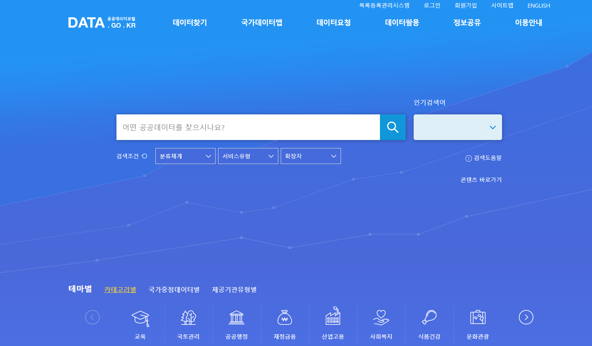
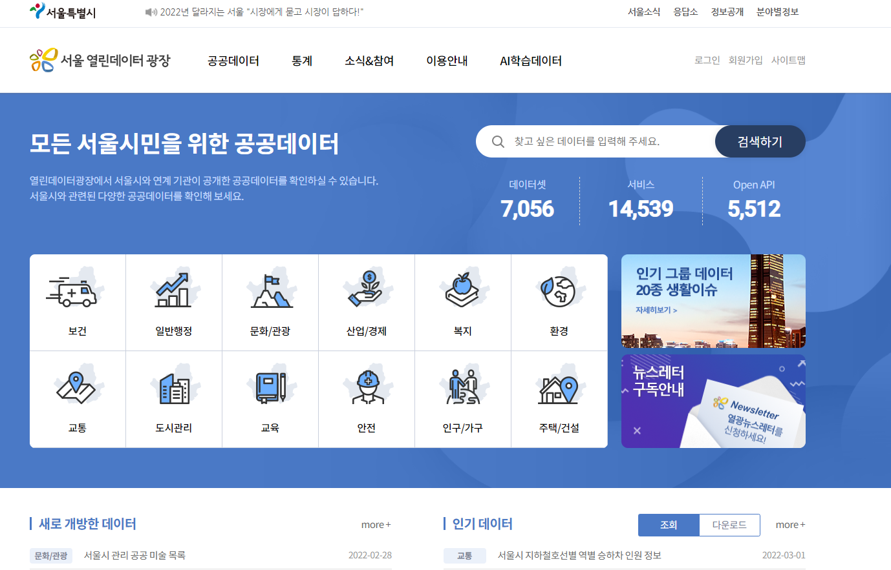
공공데이터는 우리 생활과 밀접한 분야에서 많이 활용되고 있음
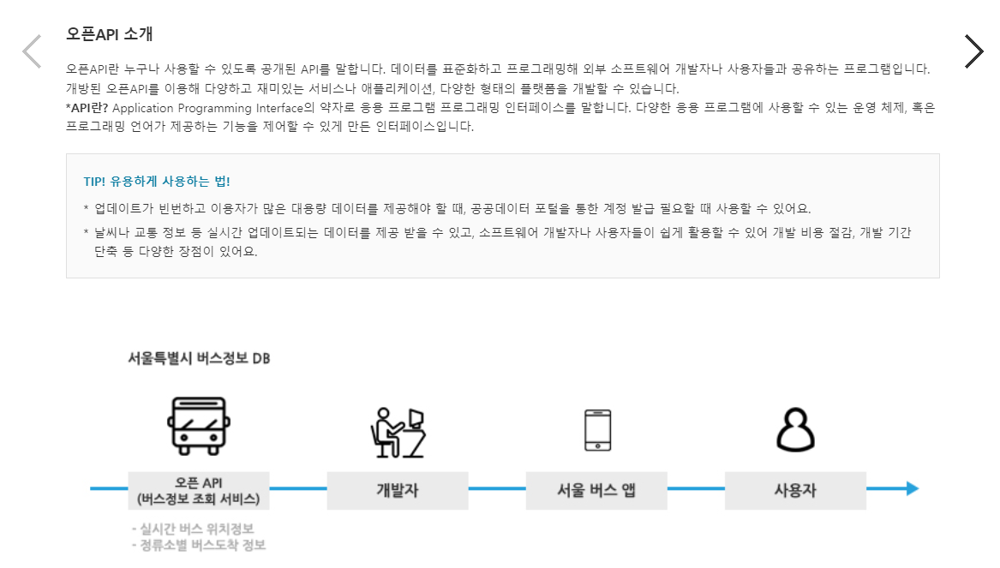
이제까지 데이터의 기초개념과 속성, 빅데이터 환경에서의 데이터 수집방법 등을 살펴보았음
데이터베이스란 여러 사람이 공유하면서 이용하기 위해 통합 관리되는 정보의 집합으로 정의할 수 있음
데이터베이스에서는 1개 이상의 자료가 논리적으로 연결되어 축적되며, 이 축적과정에서 구조화 방법을 이용함으로써 자료 검색과 갱신의 효율성을 최대한 확보할 수 있도록 함
적절한 조직화 구조화를 통해 자료의 중복을 피하고 효과적인 접근이 가능하도록 자료를 구성함으로써 효율성을 꾀할 수 있음
데이터베이스에 축적된 자료는 동일하다 하더라도 사용자의 목적에 따라 서로 다른 방향으로 응용할 수 있음
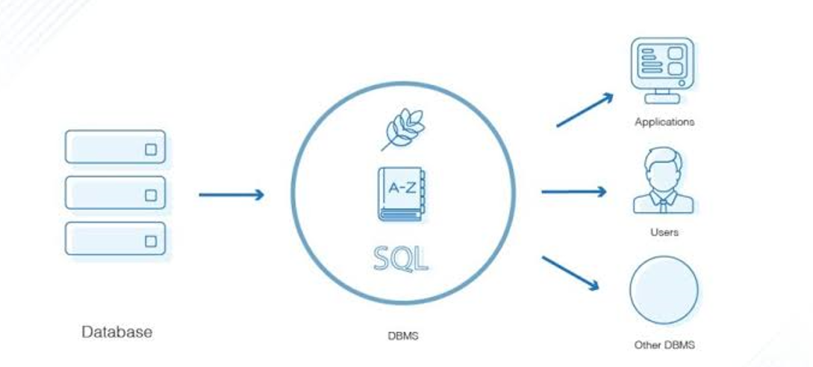
데이터베이스는 통합된 형태의 연관성 높은 데이터의 집합으로서 다음과 같은 특징이 있음
| 데이터베이스의 특징 | 내용 |
|---|---|
| 통합된 데이터 | 데이터의 특성, 실체 간의 형식 관계의 개념적인 구조화 |
| 데이터의 연관성 | 복수의 적용업무에 제공하는 관련 있는 데이터의 집합 |
| 데이터 중복의 최소화 | 데이터의 내용이 중복되지 않은 가운데 다양한 접근방식 및 검색과 갱신의 효율성 확보 |
| 보조기억장치 활용 | 보조기억장치의 활용 |
| 동시 공유 | 여러 사람이 데이터에 동시 접근하여 자료를 공유 |
| 최신의 데이터 유지 | 새로운 데이터로 갱신이 용이 |
| 일관성, 무결성 | 데이터의 일관성과 정확성 유지 |
| 보안성 | 접근을 효율적으로 통제, 관리하여 보안을 유지 |
데이터베이스의 단점
데이터베이스와 관련한 전문 지식을 지닌 데이터베이스 전문가가 필요
전산화 및 관리에 소요되는 비용 증가
데이터의 양이 급속도로 팽창하면서 관리비용 증가
대용량 디스크로의 접근이 집중되면 과부하가 발생할 우려가 있음
데이터 백업과 복구가 어렵고 시스템이 복잡함
데이터베이스 모델(database model)은 데이터의 논리적 설계와 그들 간의 관계를 표현한 것
데이터 모델은 흔히 데이터베이스 설계과정에서 데이터의 구조를 표현하기 위해 사용되는 도구임
현실세계의 데이터를 컴퓨터에서의 데이터로 표현하는 개념적 도구로 이해할 수 있음
데이터 모델링: 데이터 모델을 바탕으로 현실세계에서 데이터베이스까지 만들어 나가는 과정
데이터모델링은 개념적 데이터 모델 - 논리적 데이터 모델 - 물리적 데이터 모델 등 3단계에 걸쳐 이루어짐
데이터 모델의 구성요소는 데이터 구조(structure), 연산(operations), 제약 조건(constraints) 등이 있음
데이터 구조: 데이터의 구조 및 정적 성질을 표현
연산: 데이터의 인스턴스(상태)에 적용 가능한 연산 및 조작기법
제약조건: 데이터의 논리적 제한 명시 및 조작의 규칙
데이터 모델은 계층형 모델(hierarchical model), 네트워크형 모델(network model), 관계형 모델(relational model) 등 다양한 모델이 있음
계층형 모델: 트리 형태로 구성된 데이터 모델, 계층구조가 형성됨
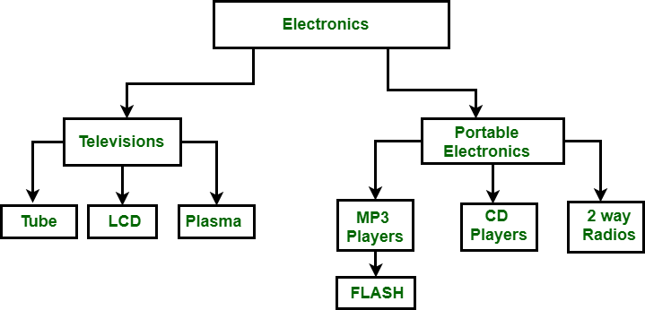
네트워크형 모델
상대적으로 복잡한 형태의 여러 가지 레코드들 간의 중복 관계성을 나타냄
계층적 모델이 확장된 것으로, 차이점은 가지가 다수의 노드에 연결될 수 있음
네트워크 모델은 중복된 데이터를 나타내는데 효율적임
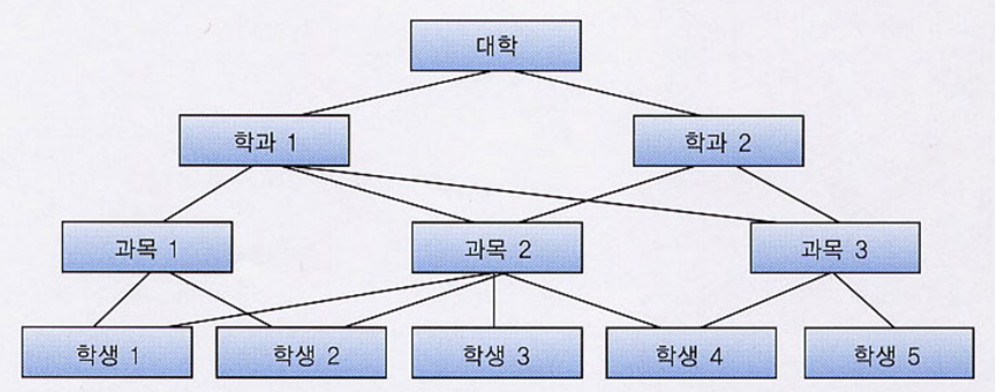
관계형 모델
데이터를 행과 열로 구성된 이차원 테이블 집합으로 표현하는 모델
1970년에 코드(E.F. Codd)가 소개한 수학적인 모델로 논리와 집합론에 의해 정의됨
관계형 데이터베이스에서의 릴레이션은, 열(row)과 행(column)으로 구성된 데이터 간의 관계를 나타내는 표(table) 자체를 의미
릴레이션 스키마(relation schema)는 릴레이션의 논리적인 구조를 정의하는 것으로서 시간에 따라 변하지 않는 정적인 성질을 의미
릴레이션에서의 각 행을 튜플이라고 하며 각 열을 속성(attribute)이라고 함
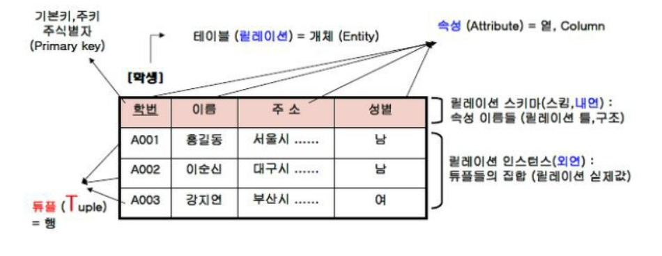
이 외에도 객체-관계형 모델(object-relational model), 객체형 모델(object model) 등 다양한 형태의 모델이 있음
데이터 모델은 데이터베이스 설계에 대한 청사진임
데이터 모델을 통해 데이터베이스 설계자와 개발자, 사용자 등은 시스템의 구조를 이해하고 원활한 의사소통을 하게 됨
데이터 모델을 통해 데이터베이스의 골격을 이해하고 이러한 이해를 바탕으로 시스템 구축 대상이 되는 업무 내용도 정확하게 파악할 수 있음
데이터베이스 관리 시스템(Database Management System, DBMS)은 다수의 사용자가 데이터베이스 내의 데이터에 접근할 수 있도록 도와주는 소프트웨어의 집합으로 다음과 같은 기능이 있음
정의(Definition): 모든 응용프로그램이 요구하는 데이터 구조를 지원하기 위해 데이터베이스에 저장될 데이터에 대한 형식, 구조, 제약조건들을 명시하는 기능
조작(Manipulation): 특정한 데이터를 검색하기 위한 질의, 데이터베이스의 갱신, 삽입, 삭제 등을 체계적으로 관리하기 위한 인터페이스를 제공
제어(Control): 무결성(integrity)을 유지하도록 하고 하드웨어나 소프트웨어의 오동작으로부터 시스템을 보호하는 한편, 권한 검사(authority)의 기능을 수행하는 동시에 이러한 데이터 처리과정에서 처리결과가 정확하도록 병행제어(concurrency control) 기능을 제공
DBMS의 장점을 정리하면 다음과 같음
자료와의 관계성을 정의하기 때문에 자료 통합이 증진됨
DBMS를 통해 데이터의 접근이 매우 용이하게 됨
접근의 용이성이 확보되면서도 데이터 통제를 강화하여 오작동 방지나 보안등의 면을 잘 관리할 수 있음
애플리케이션 프로그램들을 쉽게 개발하고 관리할 수 있음
데이터의 논리적 물리적 독립성이 보장됨